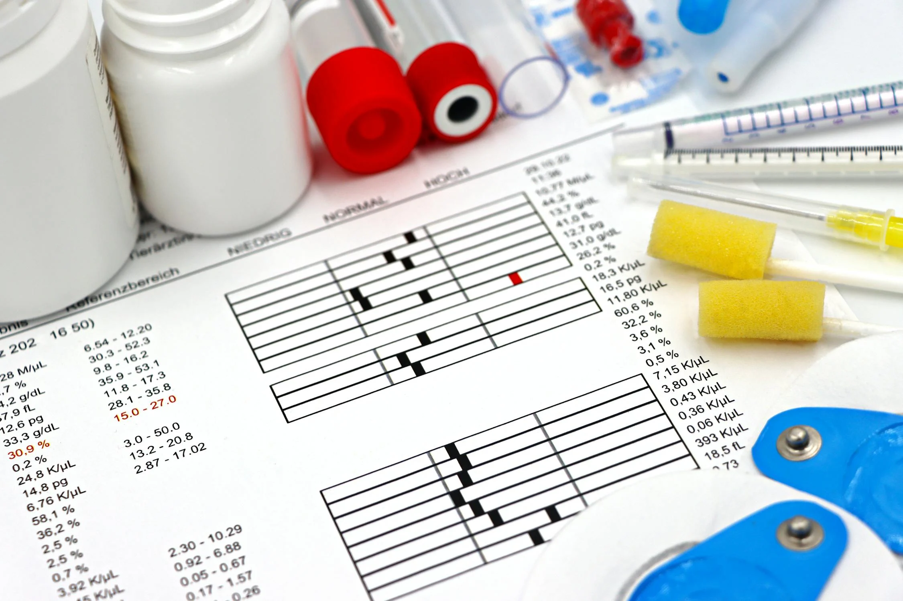
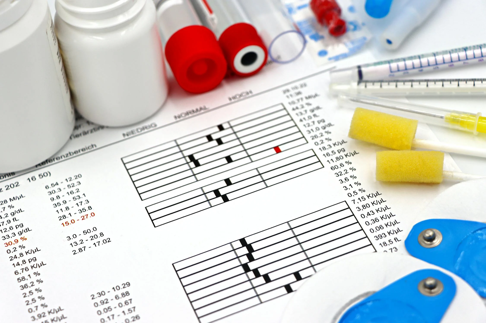
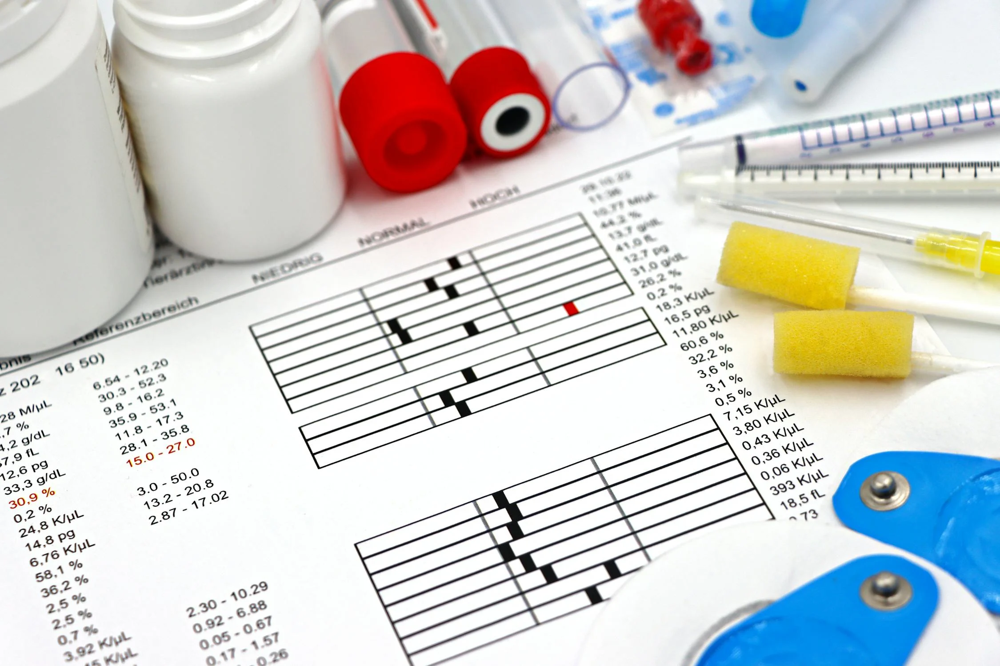
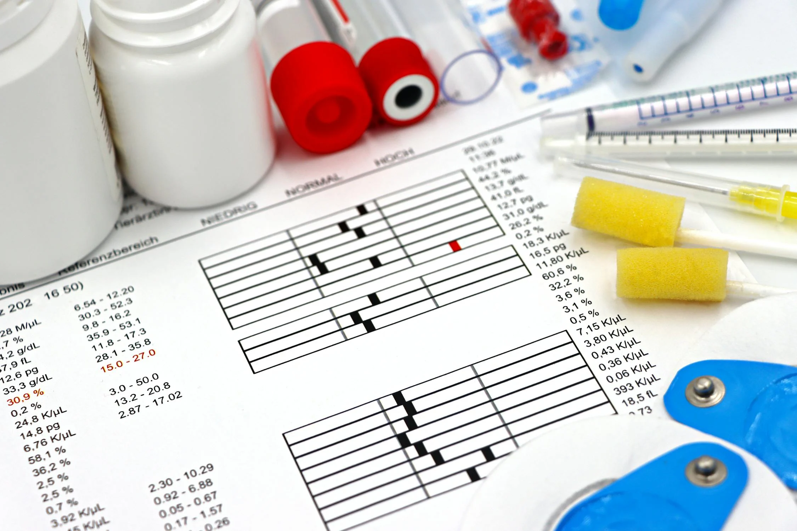

Your current age in years. This is an important factor as heart disease risk typically increases with age.
Select your biological sex: 1 for Male, 0 for Female. Men generally have a higher risk of heart disease than women before menopause.
0 - Typical Angina: Chest pain that's triggered by physical activity and relieved by rest or medication.
1 - Atypical Angina: Similar to typical angina but doesn't follow all the classic patterns.
2 - Non-anginal Pain: Chest pain that's not related to the heart.
3 - Asymptomatic: No chest pain or discomfort.
Your blood pressure (in mm Hg) while at rest. Normal blood pressure is typically around 120/80 mm Hg. Enter the top number (systolic pressure).
Your total cholesterol level in mg/dL from a blood test. Healthy levels are typically below 200 mg/dL.
Indicates if your fasting blood sugar is greater than 120 mg/dL:
0 - No: Your fasting blood sugar is normal (below 120 mg/dL).
1 - Yes: Your fasting blood sugar is elevated (above 120 mg/dL), which may indicate prediabetes or diabetes.
0 - Normal: Your resting electrocardiogram (ECG) shows no abnormalities.
1 - ST-T Wave Abnormality: Some changes in the ST segment and T wave of your ECG, which might indicate heart strain or inadequate blood flow.
2 - Left Ventricular Hypertrophy: Shows signs that the left ventricle of your heart is enlarged, which can be a sign of high blood pressure or heart disease.
The highest heart rate you've reached during exercise. A typical maximum heart rate can be roughly calculated as 220 minus your age.
Indicates whether you experience chest pain during physical activity:
0 - No: You don't experience chest pain during exercise.
1 - Yes: You do experience chest pain when exercising, which may suggest reduced blood flow to your heart.
The difference in the ST segment on an ECG between rest and exercise. Higher values (especially above 2) may indicate more severe heart problems.
Describes the shape of the ST segment on an ECG during peak exercise:
0 - Downsloping: The ST segment slopes downward, which may indicate heart problems.
1 - Flat: The ST segment is flat, which might indicate moderate heart issues.
2 - Upsloping: The ST segment slopes upward, which is typically considered normal.
This indicates how many major blood vessels to the heart show narrowing or blockage during a special X-ray test (fluoroscopy). Higher numbers (1-3) indicate more vessels affected, suggesting more extensive heart disease.
A blood disorder that affects how your body makes hemoglobin:
1 - Fixed Defect: Part of the heart muscle shows permanent damage.
2 - Normal: No blood disorder detected.
3 - Reversible Defect: Part of the heart muscle shows temporary lack of blood flow, which might improve with treatment.
Enter your city to receive recommendations for heart specialists in your area. This helps us provide you with local medical resources if needed.
{{ prediction_text }}
{% if suggestion_text %}{{ suggestion_text }}
{% endif %} {% if health_insights %} {{ health_insights | safe }} {% endif %} {% if detailed_suggestions %}